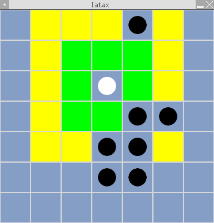

AN ATAXX GAME FOR A.I.s
Copyright (C) 2004-2005 Pierre 'AlSim' CHAPUIS (alsim@users.sf.net)
Vous êtes autorisé à copier, distribuer et/ou modifier ce document conformément aux termes de la GNU Free Documentation License, Version 1.2 ou n'importe quelle version postérieure publiée par la Free Software Foundation ; avec aucune Section Invariante et aucun Texte de Couverture Avant ou Arrière (with no Invariant Sections, no Front-Cover Texts, and no Back-Cover Texts).
Vous devriez avoir reçu une copie de la GNU Free Documentation License avec ce fichier. Sinon, écrivez à AlSim.
[ Questions et réponses - Utiliser Iatax - Règles d'Ataxx ]
[ Créer votre propre bot - Le module LogReader - Et maintenant ? ]
[ Créer votre propre bot - Le module LogReader - Et maintenant ? ]
I) Questions et réponses
Qu'est-ce que Iatax ?
Iatax (avec un seul 't') est un jeu basé sur les règles d'Ataxx (que vous pouvez connaître grâce à son célèbre port pour Gnome nommé Gataxx). La différence est que dans Iatax, les 'joueurs' sont des bots developpés par vous en language Perl, un peu comme dans CoreWars.
Y-a-t'il un site web de Iatax ? Un E-mail ?
Oui ! Le projet Iatax a la chance d'être hébergé à SourceForge.net. Sa page personnelle est www.iatax.sf.net. Si vous voulez envoyer un Em@il à son auteur pour une raison quelconque, vous pouvez écrire à alsim@users.sf.net.
Suis-je autorisé à utiliser, modifier, redistribuer ... Iatax ?
Oui. Iatax est un logiciel libre, diffusé sous license GPL. Vous devriez en avoir reçu une copie avec ce logiciel si vous l'avez téléchargé,sinon, écrivez à AlSim. Cette license vous autorise à faire un grand nombre de choses avec le programme tant qu'il reste attaché à une copie de la GPL.
Et si je veux rejoindre l'équipe de développement ?
'L'équipe de développement' compte pour l'instant une seule personne, AlSim, mais vous êtes bien entendu le bienvenu ! Si vous pouvez dessiner, coder, traduire ..., j'apprécierai grandemant votre aide ! Envoyez un mail à AlSim et pénétrez le merveilleux monde de Iatax de l'intérieur ! De toute façon, utiliser Iatax est un peu développer Iatax si vous envoyez vos bots, rapports de bug ...
II) Utiliser Iatax
- 1. Configuration nécessaire -
Iatax est écrit en Perl et peut tourner sur n'importe quel système supportant Perl. Vous devez également installer SDL et SDL-Perl si vous voulez utiliser l'interface graphique.
- 2. Installation -
Iatax ne nécessite pas d'installation. Téléchargez simplement la dernière version, décompressez-la (tar -xzvf iatax-*.tar.gz), entrez dans le dossier qui apparaît alors et lancez iatax.pl.
- 3. Options de la ligne de commande -
--help : Affiche une aide sur les options de la ligne de commande
--iiaB nom_du_bot or fichier_bot.iax.bot : Change l'I.A. noire (Human par défaut)
--iiaW nom_du_bot or fichier_bot.iax.bot : Change l'I.A. blanche (Human par défaut)
--logfile fichier_de_rapport.iax.log : Permet à l'utilisateur de choisir son fichier de rapport (gamelog.iax.log dans le dossier de Iatax par défaut).
--nolog : Iatax ne génèrera pas de rapport. L'utilisation de cette option n'est PAS recommandée : analyser un jeu avec LogReader est uniquement possible si un rapport a été généré.
--readlog fichier_de_rapport.iax.log : Lance le module d'analyse de rapport LogReader sur le fichier passé en argument (gamelog.iax.log dans le dossier de Iatax par défaut).
--lang XX,où XX est un code de langue (ex. : FR, EN ...) : Change le langage utilisé par Iatax. vous devez préalablement télécharger et installer le fichier de langage correspondant (lang_XX.iax.lng ; lisez plus loin pour savoir comment faire). Le langage par défaut est l'anglais.
--nb X, où X est un nombre : Iatax jouera X parties consécutives entre les deux différents bots, le vainqueur du match étant celui qui en gagne la majorité. L'égalité est possible en cas de X pair. ATTENTION : ne choisissez pas X trop grand si vous ne voulez pas que votre match dure trop longtemps ...
--ig : Iatax tournera en mode graphique. Nécessite SDL.
--theme nom_du_thème : Permet de choisir le thème de l'interface graphique (basic par défaut).
- 4. Personaliser votre Iatax -
Vous pouvez faire différentes choses pour améliorer votre Iatax :
* Installer de nouveaux langages : téléchargez-les, puis copiez les fichiers dans le dossier "lang".
* Ajouter de nouveaux thèmes graphiques : téléchargez-les, puis décompressez les archives dans le dossier "themes".
* Ajouter des bots : téléchargez-les, puis copiez les fichiers dans le dossier "bots".
- 5. Human -
Human est un fichier .iax.bot spécial qui vous permet de jouer contre vos bots (pour les tester/déboguer/...). Bien entendu, si vous définissez les deux I.A.s noire et blanche comme Human, bous pourrez utiliser Human comme un jeu 'normal' dans le style d'Ataxx, même si ce n'est pas le but recherché.
Si vous lancez Human en mode texte, il vous demandera votre nom puis, à chaque tour, les coordonnées de la pièce que vous voulez jouer et de votre cible. A n'importe quel moment, vous pouvez répondre 'w' pour abandonner, 's' pour passer le tour (notez que ça ne marchera que si vous ne pouvez rien faire d'autre) ou 'g' pour voir l'état du jeu. En mode graphique, l'utilisation d'Human est intuitive et ne devrait pas vous poser de problème (utilisez Tab pour passer le tour) ...
- 6. BASIX -
BASIX est un bot inclus dans Iatax pour servir de test. vous pouvez l'utiliser comme n'importe quel bot en tapant '--iiaX basix'. Il peut aussi vous servir d'example pour l'écriture de vos propres bots.
III) Règles d'Ataxx
Les règles d'Ataxx sont simples, mais le jeu n'est pas facile. Le but est d'avoir plus de pions que votre adversaire à la fin du jeu, qui se produit quand l'un des deux joueurs n'a plus de pions ou quand le plateau (appellé Grid à Iatax) est plein. Dans Iatax, le jeu peut aussi se terminer sur une 'SegFault' (c'est à dire lorsqu'un bot essaie de faire quelque chose d'interdit) ou quand l'un des joueurs abandonne.
Le Grid est un tableau de 7 par 7. Au début du jeu, chaque joueur possède deux pions dans des coins opposés du tableau, comme sur la capture ci-dessous.

Les noirs commencent. Deux types de coups sont autorisés : la 'copie' et le 'déplacement'. La copie consiste à ajouter un pion dans une des cases proches d'un de vos pions. Le déplacement consiste à déplacer l'un de vos pions du plateau vers une autre case proche de l'une de celles où vous auriez pu jouer une copie. Les obstacles ne bloquent pas les déplacements, mais vous ne pouvez pas placer l'un de vos pions sur une case déja occupée. Sur cette capture, le joueur blanc peut jouer une copie sur l'une des cases vertes ou un déplacement sur l'une des jaunes.

Quand vous copiez ou déplacez l'un de vos pions sur une case adjacente à un ou plus des pions de votre adversaire, vous le capturez. C'est le but du jeu : voler les pièces de votre adversaire.
Si vous n'avez pas défini l'option '--nb', le gagnant de la première partie remporte le match, sinon, le vainqueur est celui qui gagne le plus de parties.
IV) Créer votre propre bot
Maintenant vous savez comment ça marche, et vous aimeriez commencer à créer votre propre bot. Bonne idée ! Pour commencer, vous aurez besoin d'un éditeur de texte. C'est mieux si il supporte la coloration syntaxique pour Perl (la pluspart des éditeurs connus comme Vi, Emacs, Kate, Gedit, Jext pour ceux qui tourneraient sous Windows ...peuvent le faire). Je recommande aux utilisateurs de Linux/BSD d'utiliser un éditeur sous X. Ca va probablement choquer les puristes, mais développer un bot en mode texte n'est pas une bonne solution, car vous aurez de toute façon besoin d'un serveur X pour des raisons de test. Si vous voulez vraiment conserver votre éditeur préféré, utilisez GVim ou XEmacs, ou lancez-le dans un terminal.
J'ai dit que les bots devaient être écrits en Perl. Voici un exemple de la syntaxe à employer :
# Nom_du_bot par Auteur
# Courte description
$Name = 'Name' ;
$IsHuman = 0 ;
sub Play
{
votre_code_ici
return (xSource, ySource, xAim, yAim)
}
Bien sur, vous pouvez également définir d'autres fonctions que Play, mais c'est elle qui sera appellée par Iatax avec un unique argument (récupérable par un shift), 1 si le bot joue les Noirs, 2 si le bot joue les Blancs. Votre bot est également autorisé à lire @main::grid pour connaître l'état du jeu, mais ne doit bien sur pas le modifier (sous peine de SegFault). Il doit renvoyer, comme dans l'example, un tableau de 4 éléments représentant le mouvement effecté. Rappellez vous que le Grid est composé ainsi :

Si votre bot ne peut rien faire d'autre, il est autorisé à passer son tour. Pour passer un tour, renvoyez -1 à la place du tableau qui représente votre coup. Mais attention : si votre bot pouvait jouer, cela provoquera une SegFault (les règles d'Ataxx interdisent de passer son tour sauf si c'est vraiment nécessaire) ! Si vous ne voulez pas vous occuper de cela vous-même, ajoutez juste ces deux lignes au début de votre code et ça suffira :
my $type = shift ;
(&main::VerSkip($type)) && return -1 ;
Quand vous avez fini de coder, savegardez votre fichier dans le dossier 'bots' avec l'extension .iax.bot et lancez Iatax avec l'option '--IIAB votre_bot' ou '--IIAW votre_bot'.
Maintenant, je pense que vous en savez assez pour commencer à coder votre premier bot Iatax. Bon jeu !
V) Le module LogReader
Quand vous aurez créé votre premier bot, peut-être marchera-t-il, et peut-être pas ... Disons surement pas ! Et vous voudrez voir ce qui cloche pour le déboguer. C'est le but de LogReader. Il s'appelle avec l'option '--readlog fichier_de_rapport.iax.log'. Si vous avez déja ouvert un fichier .iax.log (sinon, faites le maintenant !), vous avez vu que tous les coups sont enregistrez de manière ligible, si bien que si vous aviez un échiquier et des pions (vous serez plus ou moins obligé d'acheter un Othello si vous devenez fan de Iatax) vous pourriez rejouer la partie en entier.
LogReader peut faire tout le boulot pour vous ! En mode texte, vous devez d'abord entrer le numéro de la partie (le premier étant 1) que vous voulez étudier (si vous n'avez pas défini '--nb', répondez '1'), puis utiliser '+/-' pour aller au tour suivant/précédent. Comme '+' est la réponse par défaut, vous irez également au tour suivant en appuyant simplement sur entrée. Si vous entrez un numéro de tour, vous vous y rendrez automatiquement. Entrez 'q' pour quitter. En mode graphique, c'est encore plus simple : utilisez les flèches de votre clavier pour naviguer entre les niveaux (Droite : suivant ; Gauche : précédent ; PageUp : premier ; PageDown : dernier) et les parties (Bas : suivante ; Haut : précédente) et appuyez sur Echap pour quitter !
LogReader inclus également depuis la v0.3 un moyen de reprendre une partie à un tour donné. Pour l'utiliser, tappez 'r' en mode texte ou appuyez sur entrée avec l'interface graphique. Il peut être utile dans de nombreux cas. Notez que vous pouvez rejouer une partie avec d'autres bots que ceux qui l'avaient commençé (c'est utile pour comparer leurs réactions à une situation donnée).
Vous verrez, cet outil est très pratique. Je l'ai utilisé entre autres pour trouver le ... de bug dans la version 0.2DBE qui faisait qu'Human ne marchait pas en mode graphique, et je pense que sans LogReader, ça m'aurait pris au minimun deux fois plus de temps.
Bien sur, vous pouvez aussi utiliser LogReader pour analyser les parties que votre bot à perdu pour éviter la défaite la fois suivante ...
VI) Et maintenant ?
Maintenant que vous savez tout, arrétez de lire cette ennuyeuse documentation et jouez à Iatax ;) Bon jeu !